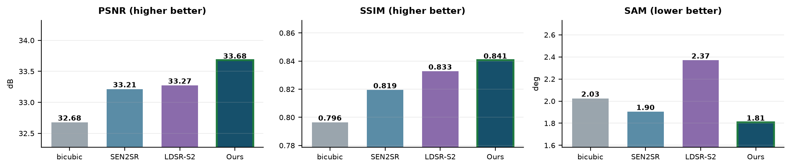
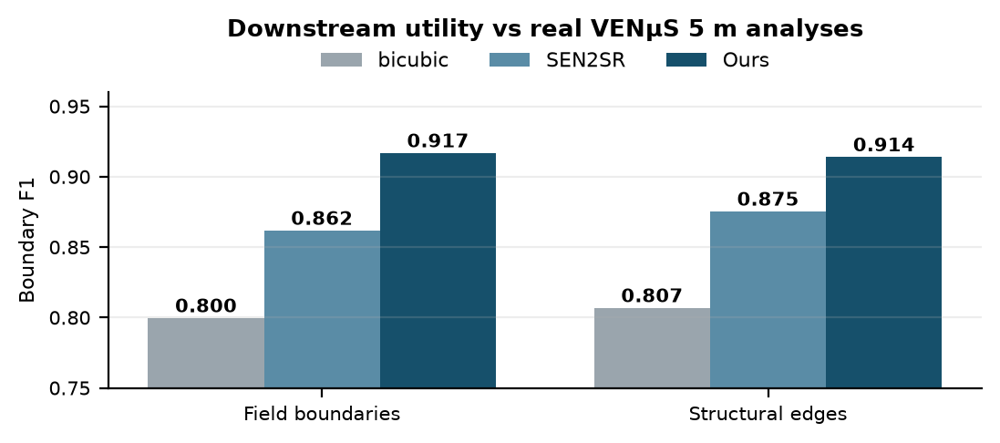

Sentinel-2 images all of India every 5 days, free, at 10 m — enough to see a field, not its boundary. Commercial sub-metre imagery costs thousands of rupees per scene.
Generative super-resolution offers a third path and introduces a new risk: a model that sharpens can also invent. That risk, not image quality, is why SR is not already operational in most agencies.
S2 L2A (B04 B03 B02 B08 @10m + SCL)
|
[1] SCL cloud mask -> scale -> tile 128/32
|
[2] Branches (one interface)
bicubic | SEN2SR | LDSR-S2 | OURS
|
[3] Trust layer
LR-consistency | spectral angle
branch spread | sampling sigma
-> confidence [0,1]
|
[4] Wald protocol | consistency | calibration
|
[5] 2.5m COG: 4 bands + sigma + confidence
|
[6] NDVI | buildings | change detection
| Site | Location | Patches |
|---|---|---|
| KUDALIAR | Telangana, INDIA | 4,000 |
| ANJI | China | 2,312 |
| MAD-AMBO | Madagascar | 1,442 |
| SUDOUE-4 | France | 935 |
| ESTUAMAR | Spain | 911 |
| Train total | 8,640 | |
SEN2VENuS — real same-day Sentinel-2/VENuS pairs. India capped at 4,000 so it cannot dominate. 50 epochs, 41 min on Apple Silicon.

| Branch | PSNR | SSIM | SAM° | ERGAS | Time |
|---|---|---|---|---|---|
| bicubic | 32.68 | 0.7965 | 2.025 | 3.735 | <1 ms |
| SEN2SR (ESA, RSE 2025) | 33.21 | 0.8194 | 1.904 | 3.500 | 40 ms |
| LDSR-S2 (JSTARS 2025) | 33.27 | 0.8328 | 2.370 | 3.506 | 105.6 s |
| OURS | 33.68 | 0.8406 | 1.808 | 3.331 | 30 ms |
| Branch | PSNR | SSIM | SAM° | RMSE |
|---|---|---|---|---|
| bicubic | 35.580 | 0.8702 | 2.917 | 0.01710 |
| SEN2SR | 36.395 | 0.8929 | 2.704 | 0.01555 |
| OURS | 37.182 | 0.9101 | 2.462 | 0.01421 |

| Capability | SEN2SR | LDSR | Ours |
|---|---|---|---|
| Per-pixel uncertainty | no | sigma | 4-signal |
| Calibration validated | no | no | YES |
| Spectral angle optimised | no | no | yes |
| Interactive speed | yes | no | yes |
| Cloud masking built in | no | no | yes |
| Footprint verified | no | no | 0.00 m |
| Downstream task eval | no | no | YES |
| Indian training data | none | none | 4,000 |
| Component | Origin |
|---|---|
| SPAN backbone | ESA's, not ours |
| Initial weights | SEN2SRLite |
| Trained weights | OURS |
| Training regime | OURS |
| Loss function | OURS |
| Trust layer | OURS |
We did not invent an architecture. We asked a different question — not how to sharpen better, but how to make sharpening trustworthy. The result beats the ESA baseline whose backbone we borrowed, by training and objective alone.